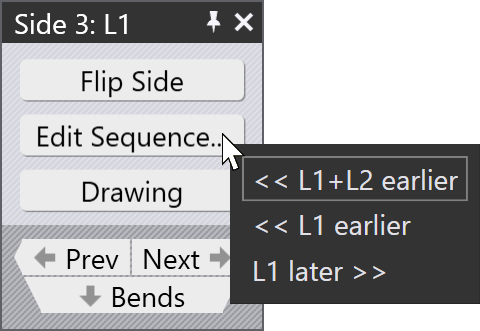

Edit a side/section

There are a few settings and operations connected to an entire bending side (as opposed to a single bend operation). These are accessed by opening the Side Panel:
-
Open a Bend panel (by clicking twice on a number in the Fold Navigator). Then click on the Side button to open the Side panel for the side that contains that bend.
-
Ctrl+Click on a number in the fold navigator to open the side panel for that side.
The side panel looks like the one shown alongside (the actual set of options available in the Edit Sequence popup may be different, depending on the part).
-
Click the Flip Side button to flip the entire side upside down. This will cause the blades, blank-holders and part-handling to be recomputed immediately. On an automatic machine, this is replaced by the Flip Part button[1], since the machine cannot flip just one side over.
-
Click the Edit Sequence button to bring up a sub-menu that shows the possible sequence shuffles that you could do with this side. In the picture above, we are working with a part that has a side sequence like
C1 C2 L1 L2and we have selected the sideL1. The possible sequence choices are explained below: -
<< L1+L2 earlier shifts both L1 and L2 to happen before C1 and C2. Thus, the new sequence would be
L1 L2 C1 C2. -
<< L1 earlier shifts L1 one step earlier, so the new sequence would be
C1 L1 C2 L2. While this may not be so common, it could be useful in some situations. -
L1 later >> shifts the side L2 later, leading to a sequence that would be
C1 C2 L2 L1(of course, the sides are immediately renamed after this, so the sequence still readsC1 C2 L1 L2when code is generated).
The set of choices available in this menu depends on the current sequence, and on which side you are selecting to re-order.
-
Click on the Prev or Next buttons to navigate between the different sides in this part.
-
Click on the Bends button to navigate down from the sides into the set of bends for this side (this is the converse of the Side button in the Bend panel that lets you navigate up from a bend to the side that contains the bend).